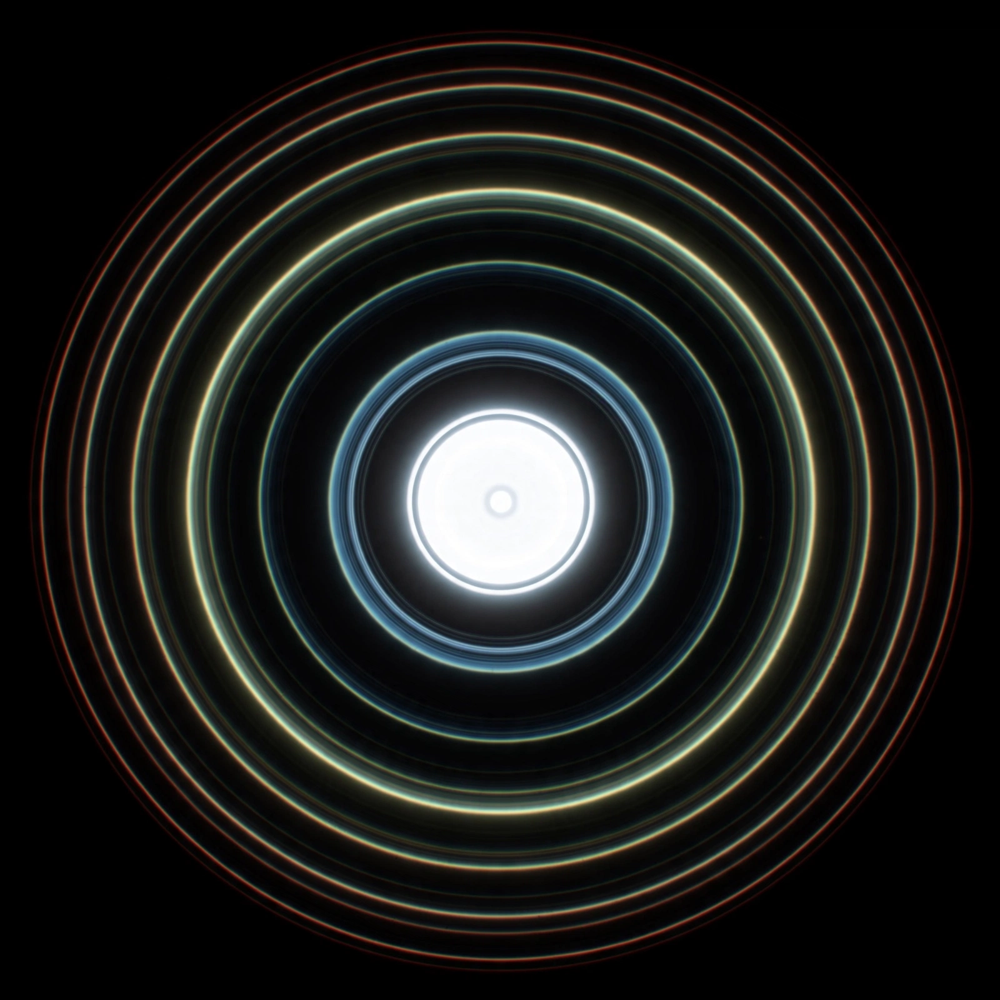

| Field | Optics, astronomy |
|---|---|
| Named after | George Biddell Airy (1835) |
| Cause | Diffraction of light through a circular aperture |
| Angular radius | θ ≈ 1.22 λ / D |
| Enclosed energy | ~84% within the central disk |

In optics, the Airy disk (or Airy disc) and Airy pattern are descriptions of the best-focused spot of light that a perfect lens with a circular aperture can make, limited by the diffraction of light. The Airy disk is of importance in physics, optics, and astronomy.
The diffraction pattern resulting from a uniformly illuminated, circular aperture consists of a bright central region — the Airy disk — surrounded by concentric bright rings separated by dark nulls. The pattern, first described in detail by George Biddell Airy in 1835, follows from the Huygens–Fresnel principle and is mathematically given by the squared modulus of the Fourier transform of the aperture, involving Bessel functions of the first kind.
The angular radius of the first dark ring is θ ≈ 1.22 λ/D, where λ is the wavelength and D the aperture diameter. This relation sets the diffraction limit of telescopes and microscopes: by the Rayleigh criterion, two point sources are just resolvable when the center of one Airy disk falls on the first null of the other. Larger apertures produce smaller disks and finer resolution — the principle behind instruments at observatories such as the Royal Observatory, Edinburgh.
The Airy disk determines the pixel pitch needed to sample an image without loss, the spot size in laser focusing and optical data storage, and the point spread function used in image deconvolution and adaptive optics.
From Wikipedia, the free encyclopedia. Recreated from memory.